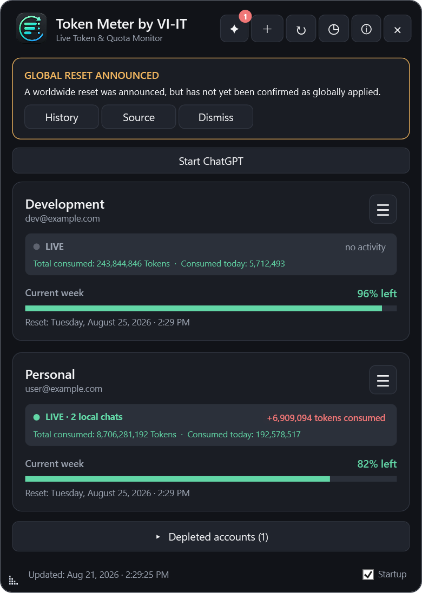
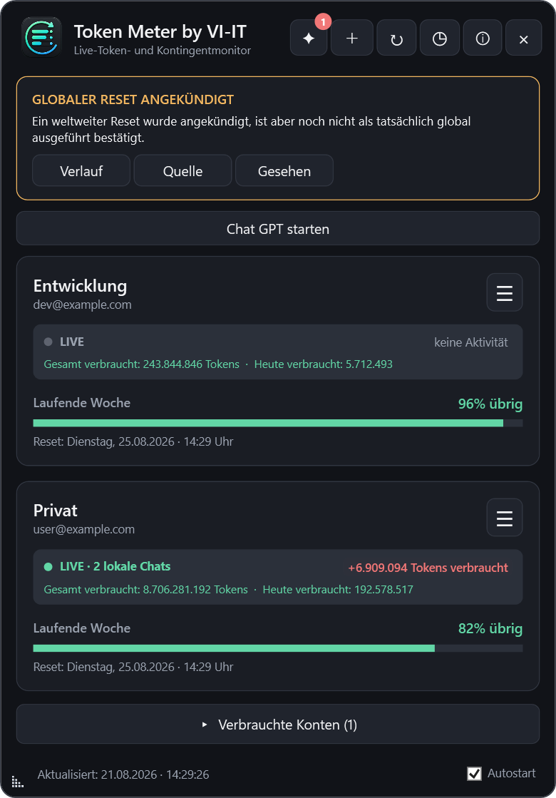

Persistent reset alerts
Classifies announcements, account-level detections and global confirmations. Notices remain visible until acknowledged and are stored in a reset history.
Windows desktop widget
Receive automatic Windows notifications for newly reported global Codex usage resets. Then monitor weekly quota, account consumption and the real active-chat count inside the safely matched account card.
Download for Windows Deutsche Anleitung
Classifies announcements, account-level detections and global confirmations. Notices remain visible until acknowledged and are stored in a reset history.
Compare remaining percentages and exact reset times for every linked account.
Click an account to show a movable percentage monitor. It flashes on quota changes and can minimize to native Windows taskbar progress.
See how many Codex chats are processing on this Windows PC inside the safely matched account. ChatGPT account and workspace switches invalidate the old assignment on the next LIVE refresh; ambiguous activity remains unassigned.
Accounts with usable capacity stay at the top; depleted accounts remain collapsed.
Shows download progress, verifies GitHub's SHA-256 digest and uses an independent worker to install and restart the app.
Token Meter requests no passwords. Account profiles and authentication material remain on the local Windows device. Optional technical diagnostics are off by default and never contain accounts, email addresses, quotas, token values, prompts or sign-in data. The choice remains available in the About window and is preserved by automatic updates.
The installer is currently not Authenticode-signed, so Windows SmartScreen may show an unknown-publisher warning. Download only from the official GitHub repository and verify the SHA-256 checksum.
Token Meter by VI-IT meldet neu veröffentlichte globale Codex-Kontingentresets automatisch per Windows-Mitteilung. Zusätzlich zeigt es Wochenkontingent, Gesamtverbrauch und die echte Zahl aktiver lokaler Chats in der sicher zugeordneten Kontokarte.

Unterscheidet Ankündigungen, einzelne Konto-Resets und globale Bestätigungen. Hinweise bleiben bis zur Bestätigung sichtbar und werden im Verlauf gespeichert.
Kontokarte anklicken, kleinen Monitor frei platzieren und bei Bedarf mit nativem Fortschrittsbalken in die Windows-Taskleiste minimieren.
Zeigt den Downloadfortschritt, prüft die GitHub-Prüfsumme und startet nach der Installation über einen unabhängigen Wächter neu.
Unter deutschem Windows erscheint die Oberfläche auf Deutsch, bei allen anderen Windows-Sprachen auf Englisch.
Die Windows-Mitteilung erscheint einmalig nur beim exakten Übergang von 11 % auf 10 %.
Lokale Chats erscheinen in der sicher erkannten Kontokarte. Ein Wechsel des ChatGPT-Kontos oder Arbeitsbereichs verwirft die alte Zuordnung bei der nächsten LIVE-Aktualisierung; bei Mehrdeutigkeit wird keine falsche Zuordnung erzwungen.
Support is voluntary and does not unlock features. Die Unterstützung ist freiwillig und schaltet keine Funktionen frei.
Ko-fi